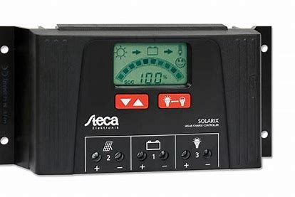

SMA SB3.6 Solar panels inverter 1 phase
The new Sunny Boy 3.0–6.0 ensures maximum energy yields for private homes.
Established product features and integrated software solutions will provide yield optimization throughout
the
system’s entire service life. Even in shading. SMA ShadeFix is a proprietary inverter software that
optimizes
energy yield in nearly every situation. SMA Smart Connected inverter monitoring offers enhanced safety
by
detecting errors at an early stage and automatically reporting them to the installer.
SMA ShadeFix is an integrated software for yield optimization
Dynamic active power limitation means direct use of excess energy and less power from the grid.
Automatic inverter monitoring via SMA Smart Connected.
System data visualization via Sunny Portal and Sunny Places.
more info

Victron 175Wp 12Volt Solar panel set
STECA SOLARIX
Solar charge controllers Steca Solarix 2525 and 4040 are newly developed products based on the
internationally
renowned controller family Steca PR. With increased module and load current, the controllers are now
also
suitable for even larger systems. The devices also feature an integrated USB charging port for charging
smartphones and tablets.
Use of the latest charging technologies combined with state of charge determination enable optimal
battery
maintenance and module power monitoring. The state of charge is represented visually as a level meter.
Data
such
as voltage, current and state of charge can also be displayed digitally.
more info

Gel and AGM batteries.
Victron AGM Super Cycle battery 12V 100Ah
The GEL model range offers best deep cycle durability and overall longer life. The use of high purity
materials
and lead calcium grids ensure that for both AGM and GEL products have particularly low self-discharge so
that
they will not go flat during long periods without charge. Both ranges are supplied with M8 drilled, flat
copper
terminals ensuring best possible connection contact and eliminating the need for battery terminals. The
batteries are compliant with both CE and UL specifications in ABS fireproof containers and come with
Victron's 2
year world-wide warranty.
more info